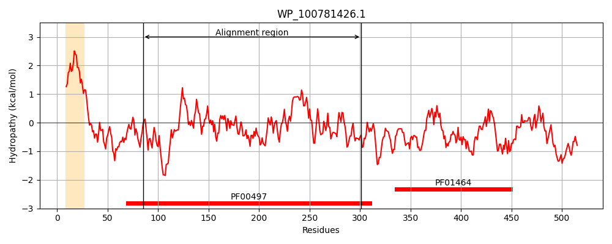
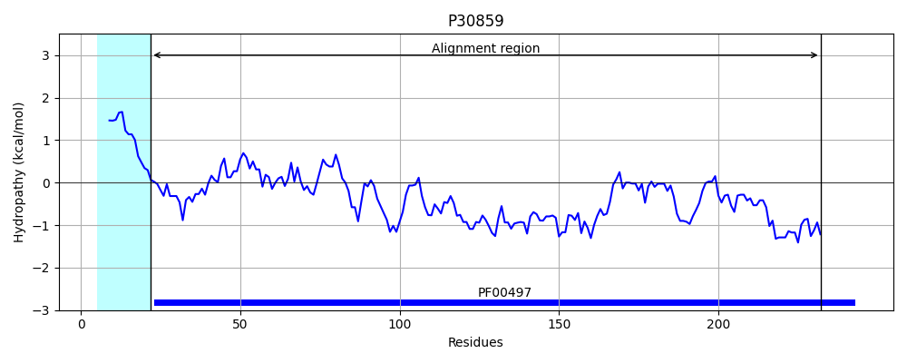
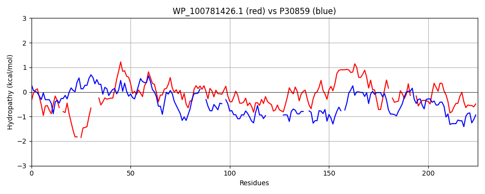

Hit Accession: P30859
Hit TCID: 3.A.1.3.3
Hit Description: gnl|BL_ORD_ID|9731 gnl|TC-DB|P30859|3.A.1.3.3 Arginine-binding periplasmic protein 1 precursor - Escherichia coli.
Mach Len: 225
e:0.000188
Query TMS Count : 1
Hit TMS Count: 1
TMS-Overlap Score: 0.000000
Predicted Substrates:CHEBI:2643;arginine
BLAST Alignment:
Score: 99 , Bit scores: 42 bits, E-value: 1.9e-04, Alignment length: 225, Percentage identity: 27
Query: 85 TQRGATHDIFMALEN-DLNKQLAK-DKKLKQ---RHLKLHIVFVPVSRDNLFIALNEGKGDIAAANLTITPLREAQVDFAQPLYSNVKELLISGPASPKIDSLEQLSGQTVFVRRSSSYYESLQALNARFASESRPPVILEAAPEALEDEDLLEMLNAGLIPLIVVDQHKAVFWKQVFPKI-QVHDNVVLRD--GGNIAWAVRKDSPQLLAVLNNFVKKNRQGTT 301
T R AT + E+ D N Q+ D L Q + + F + D+L +L + + A + ITP RE QV F P Y N L G K S++QL G+ V V+ +++ +F + P + P L++ N G I + D W + PK+ V D V +D G + AVR+ + +L LN ++K ++ T
Sbjct: 22 TIRFATEASYPPFESIDANNQIVGFDVDLAQALCKEIDATCTFSNQAFDSLIPSLKFRRVEAVMAGMDITPEREKQVLFTTPYYDN--SALFVGQQG-KYTSVDQLKGKKVGVQNGTTH--------QKFIMDKHPEI--TTVPYDSYQNAKLDLQN-GRIDGVFGDTAVVTEWLKDNPKLAAVGDKVTDKDYFGTGLGIAVRQGNTELQQKLNTALEKVKKDGT 232 | Protein Hydropathy Plots: |
|---|
|  |  |
Pairwise Alignment-Hydropathy Plot:
|
|---|
|  |